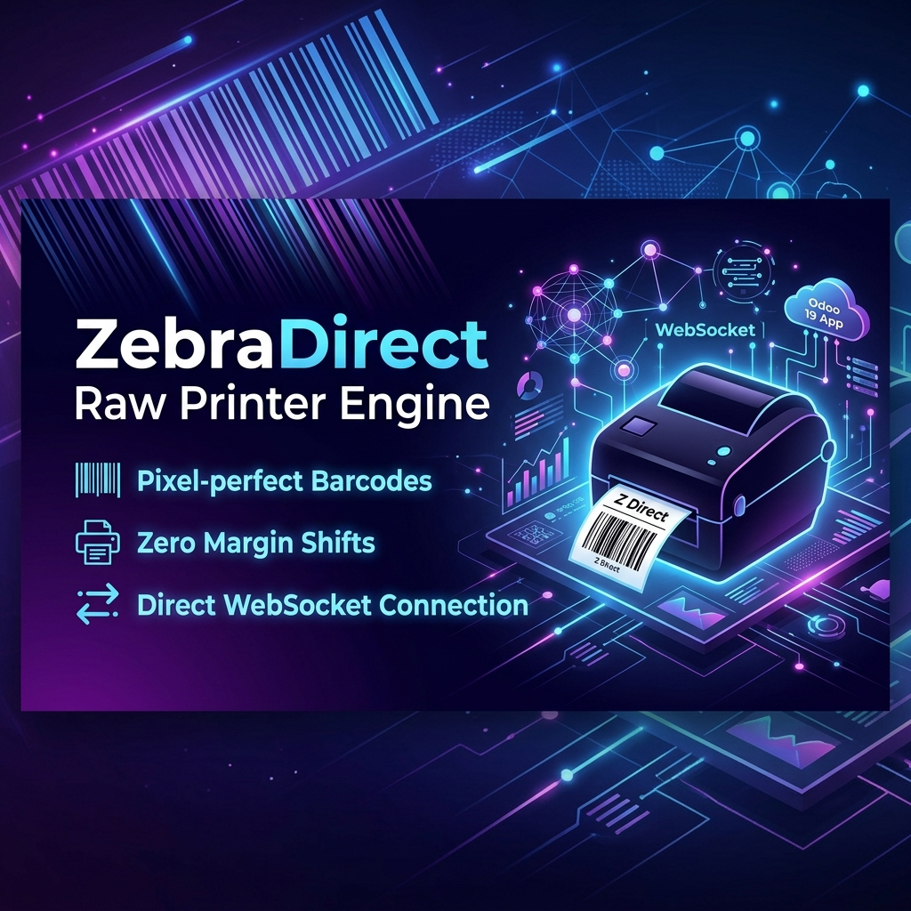

Odoo's default PDF rendering is great for documents, but frequently fails for small industrial thermal printers (Zebra, TSC). ZebraDirect completely bypasses PDF generation, compiling your label designs directly into raw printer control languages (ZPL / TSPL) and dispatching them instantly via local WebSockets.

Write raw ZPL or TSPL using dynamic Jinja2 placeholders (e.g. {{ record.name }}) inside Odoo.
Assign the template to your specific Picking Type (e.g., Delivery Orders) and set your local WebSocket URL.
Click "Print ZPL Labels" to instantly send raw code via the client's local WebSocket directly to the thermal printer.
By default, Odoo renders barcodes into a PDF. When the browser scales this PDF down to tiny labels (e.g., 32x15mm), anti-aliasing causes blurriness, making it unscannable for industrial scanners. ZebraDirect solves this by sending raw ZPL, so the printer natively draws crisp barcodes.
Browsers inject their own margins and headers/footers during PDF printing, often offsetting the label by a few millimeters. By using ZebraDirect to send raw ZPL or TSPL via WebSocket, you completely bypass the browser's print dialog and ensure pixel-perfect placement every time.
ZebraDirect outputs raw commands to any WebSocket URL you define (e.g., ws://127.0.0.1:8181). You can use popular local print spoolers like QZ Tray to catch these WebSockets and forward them to your local USB or Network printer. You do not need the expensive Odoo IoT Box.